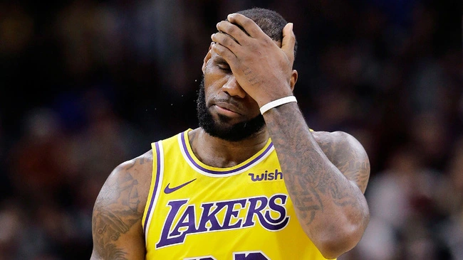

Como anda a recuperação de LeBron James
LeBron James é um exemplo de atleta quando o assunto é cuidados pessoais e não tinha histórico de lesões graves até ingressar no Los Angeles Lakers. No ano passado, o astro gastava cerca de US$ 1,5 milhão por ano com alimentação, descanso e treinamento. Mas em seus cinco anos com o time de Angelino, ele faltou com mais frequência do que em seus outros 15 anos na NBA.
Em suas primeiras 15 temporadas na NBA, James perdeu apenas 71 jogos devido a lesão. Por outro lado, nas últimas campanhas ele já disputou 100 partidas com a camisa do Lakers nas últimas cinco temporadas. Atualmente, ele está se recuperando de uma lesão na perna. Na última semana, o machucado de James se agravou no último e parecia antecipar o fim da temporada. O astro conseguiu evitar uma cirurgia no pé, segundo o jornalista Shams Charania, do site The Athletic. No entanto, será reavaliado dentro de três semanas para retornar às quadras.
Repórter diz:
“O curioso é que me revelaram que ele machucou o pé em janeiro. Então, ele teve duas opções: ficar de fora por um tempo e se recuperar ou continuar jogando. A decisão nós já sabemos, e ela foi por conta da posição que o time estava na época”